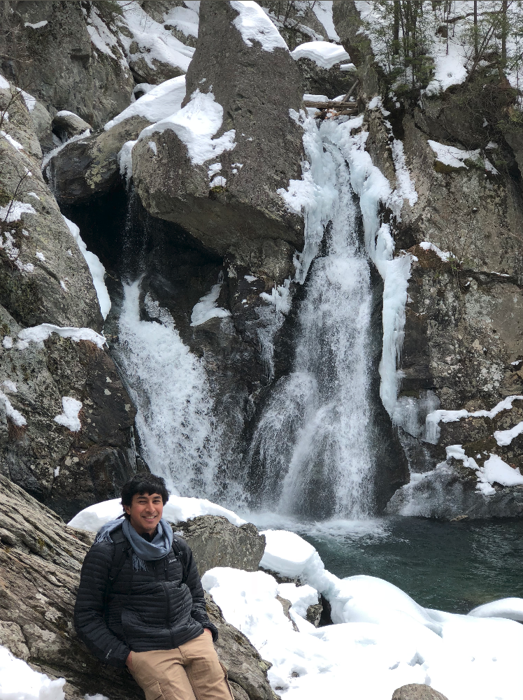

|  | Averal Kandala |
At Bash Bish Falls, in Mt. Washington, MA.
I am now a fourth year graduate student in Electrical Engineering and Computer Sciences (EECS) at UC Berkeley, advised by Professor Ali Niknejad of the Berkeley Wireless Research Center (BWRC) and Professor Mekhail Anwar of the UCSF Department of Radiation Oncology. Broadly speaking, I am interested in developing integrated circuits and systems to enable better diagnostic monitoring of general health and disease pathologies (like cancer).
Towards this end, I am developing an implantable "hub" ASIC to manage power, data storage, and wireless communications at the board level for multiple sensor ICs. This chip, part of a broader system we call BASE (Bio-implantable Arrayed Sensing Environment) and referred to specifically as BASE-Hub, was taped out in X-FAB XH018 (180 nm) in January 2023 and is undergoing testing concurrently with the associated wireless power transfer and communications setup, which we refer to as BASE-Link.
I was previously working on a project aiming to power medical implants using alpha radiation; we are hoping to publish the results of this work soon.
I also attended UC Berkeley as an undergraduate, and studied EECS then as well. As an undergraduate, I worked within Professor Michel Maharbiz's research group to optimize the performance of piezoelectric transducers used for power harvesting and communication in ultrasonic medical implants. During this time, I was happy to be supervised by Drs. Soner Sonmezoglu and Konlin Shen.
I've gotten the chance to teach a few times, in a few slightly different capacities, in my time at Berkeley. I find teaching to be fairly demanding, but extremely rewarding.
Lead Graduate Student Instructor, Microelectronic Devices and Circuits (EE 105), Fall 2023
Undergraduate Student Instructor, Microelectronic Devices and Circuits (EE 105), Spring 2020
Undergraduate Student Instructor, Great Ideas in Computer Architecture (CS 61C), Fall 2019
Academic Intern, Discrete Math and Probability Theory (CS 70), Summer 2019
I am very grateful to be supported in my current studies by the National Science Foundation (NSF) Graduate Research Fellowship Program (GRFP). As an undergraduate, I received a great deal of support from the CalVet College Fee Waiver program, as well as the Elena Catelli and Kenneth Leung Memorial Scholarships, bestowed upon me as a high school senior by the Lowell Alumni Association. Your tax dollars are certainly very hard at work!
My favorite undergraduate classes at Berkeley were EE 123, CS 152, and EECS 126. I personally don't much like (unnecessarily) banging my head against the wall to solve homework/lab/project/research problems, so my single best piece of advice for succeeding in a university environment would be to never underestimate the power of asking someone else for their thoughts on a problem. Office hours are an especially valuable vehicle for learning simply because they are a manifestation of this principle.
I have not recovered emotionally from the closures of Jayakarta Restaurant and Chaat Cafe on University Ave. Lucky House Thai is sadly the last remaining member of my preferred hole-in-the-wall trifecta. Berkeley now is very different from Berkeley five years ago and will be very different from Berkeley five years from now. Unfortunately, it's quite difficult to visit the Ethiopian and Eritrean restaurants in Oakland regularly, but I certainly try my best.
I've lived in a few places across the United States, including a number of locations within Alabama, Georgia, and California. I also once spent a summer working and studying in Toronto, Canada, and that was a rather enjoyable experience. My native language is Kannada, although I picked up English once I started going to school. I've also had quite a bit of fun learning Italian (in high school) and Hindi (in college). Italians and Indians are very similar in that they really appreciate foreigners learning their languages! I confess that cuisine was my primary motivator in selecting these specific languages to learn. Perhaps I should consider learning Amharic or Tigrinya?
My amateur radio call sign is KN6IFM. I have a black belt in Kokikai Aikido, which I have practiced since middle school. I also like reading fantasy/science-fiction novels; two of my favorite authors are Will Wight and Jeff Wheeler. Since 2009, as an extended exercise in personal character development, I have supported Tottenham Hotspur Football Club, devotedly watching my team go through lows like being hammered 5-1 by a 10-man, already-relegated Newcastle United on the last day of the 2015-16 season and highs like reaching its first-ever UEFA Champions League Final, during the 2018-19 season.
{kind=link}